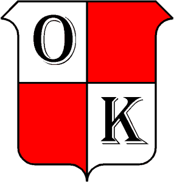

Acceso institucional
No hay registro libre. La escuela precarga a cada persona y el primer ingreso se completa usando el DNI habilitado.

TURNOKTurnOK fue pensado para centralizar tareas que suelen quedar repartidas entre mensajes, formularios y conversaciones informales. Cada solicitud conserva su estado, su responsable y su historial.
No hay registro libre. La escuela precarga a cada persona y el primer ingreso se completa usando el DNI habilitado.
TurnOK distingue el perfil general de cada usuario de los cargos institucionales que ejerce, incluso cuando tiene más de uno.
Trámites, reservas, reuniones, notificaciones y acciones importantes quedan vinculados a la base de datos institucional.